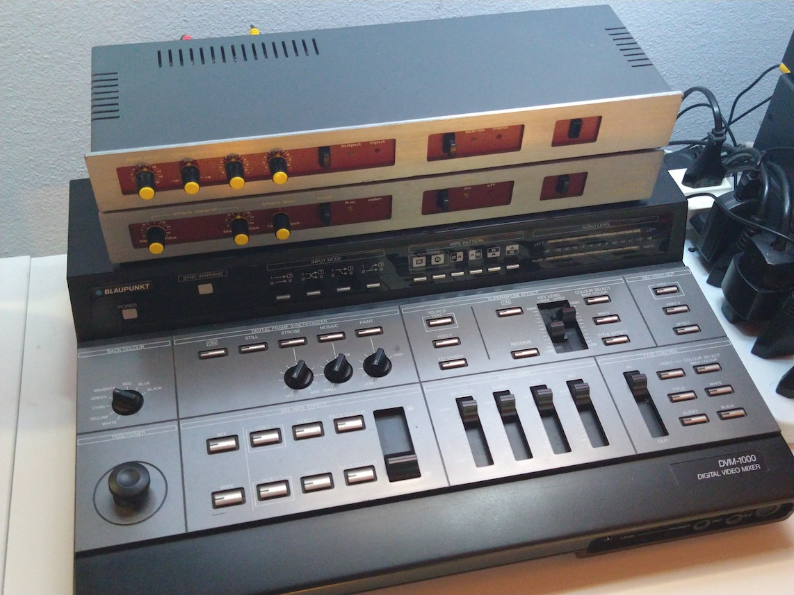
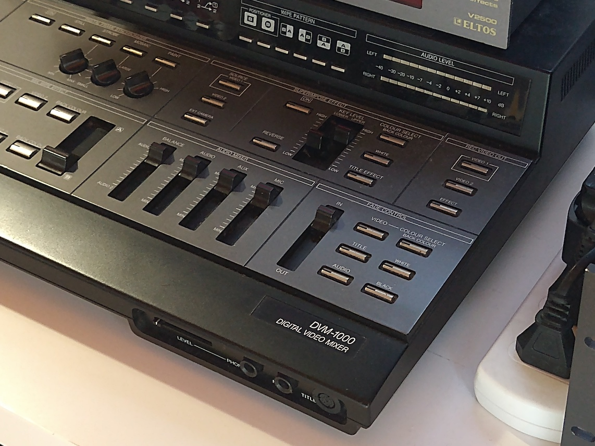
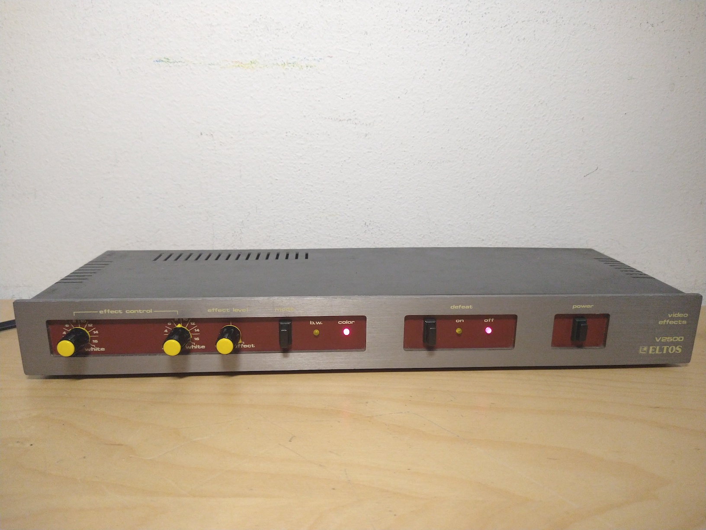
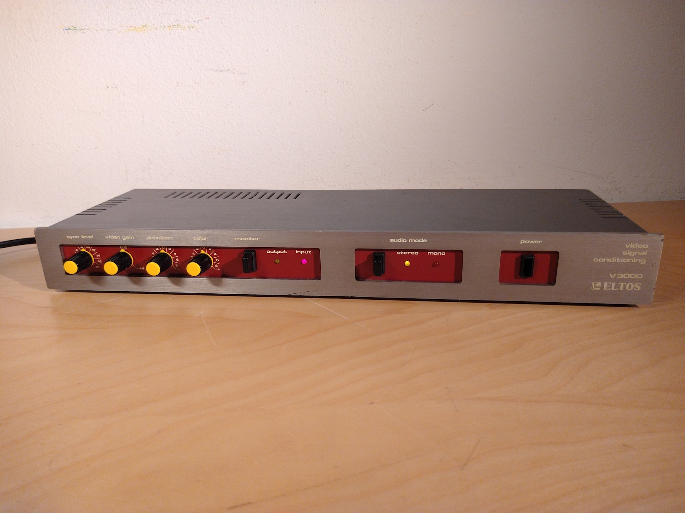
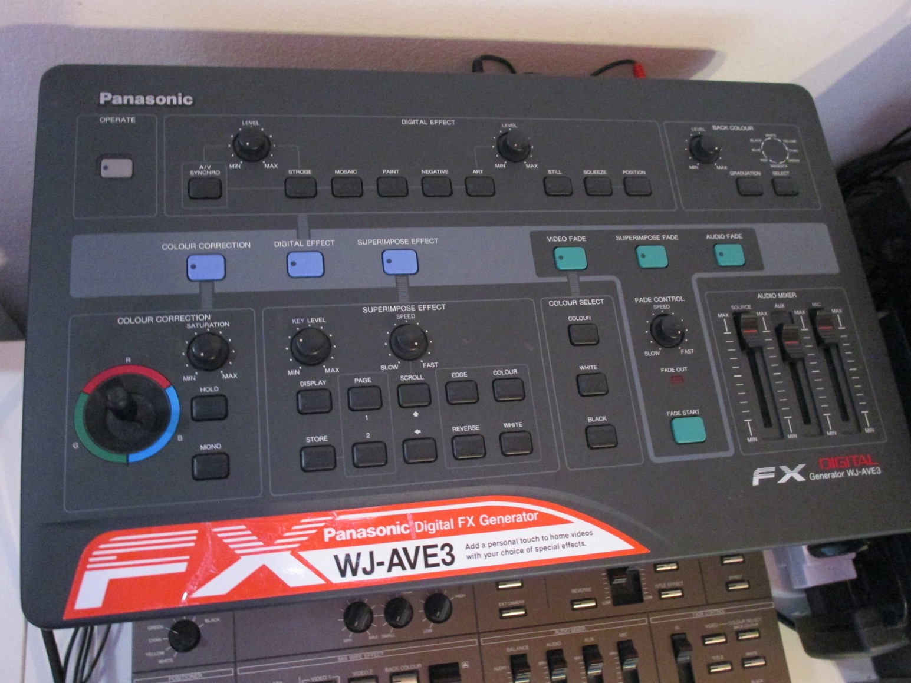
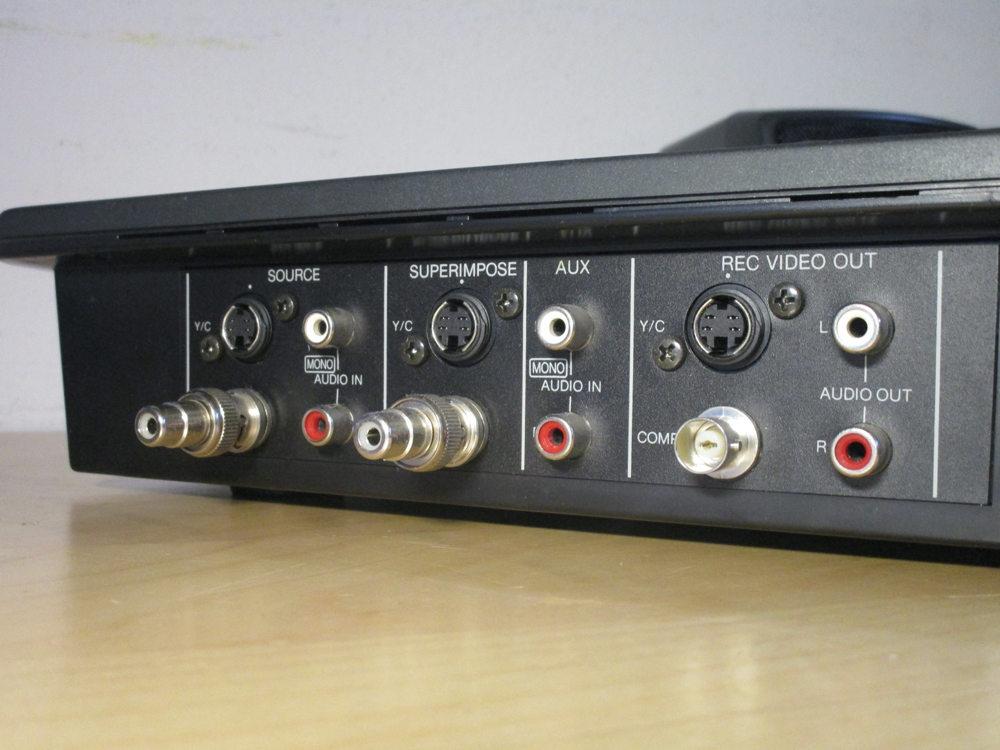
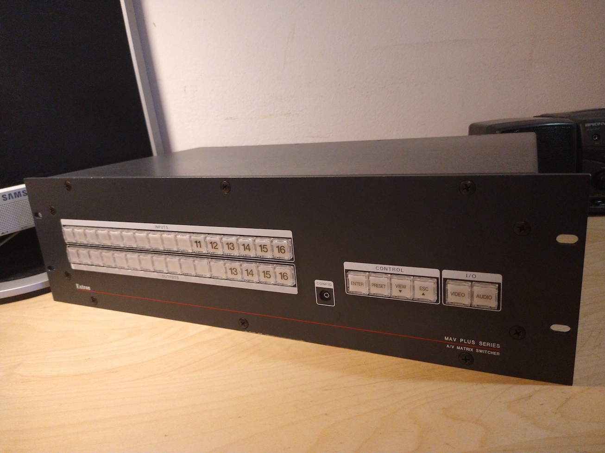
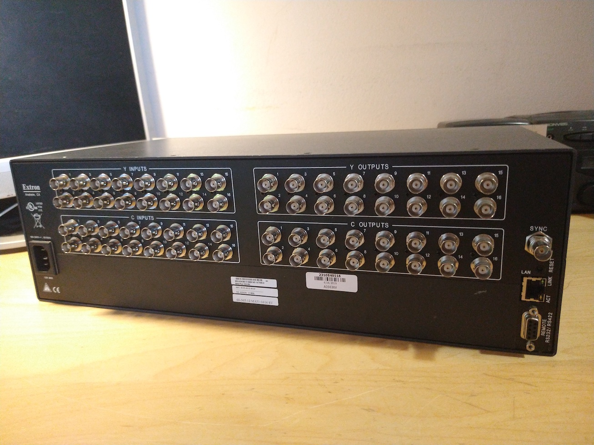
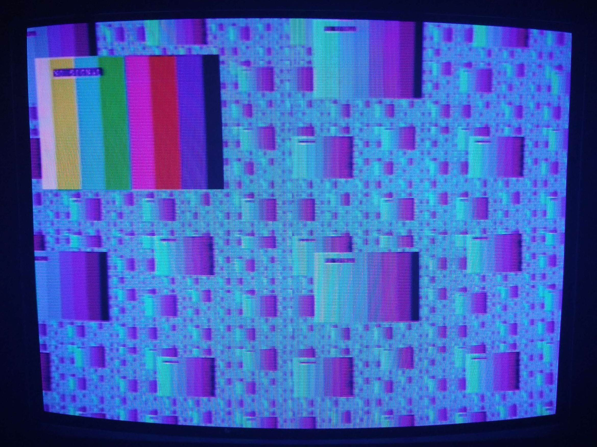

Analog video effects and experiments
This page is about my experimentation in producting interesting visual effects using analog video devices. This is mainly done using gear originally meant to edit home movies, connected together in various ways so as to alter the original video signal, generally produced using a camcorder or a DVD player.
Everything is connected using analog composite video, since that's the most common format for these devices and often the only one they support (although some also have the option to use S-Video), and since that provides the most flexibility and is much easier to modify and create effects with compared to digital signals.
My eventual goal is to show what can be achieved by spending relatively little (all the devices from this page have been obtained from flea markets or, occasionally, Ebay) and how cheap and terrible 80s "video enhancer" boxes can still have some sort of use nowadays.
Contents of this page
- Highlights
- The complete list of devices
- Examples of video outputs
- Experimenting with different devices and tools
- Tools and ideas for setups
Highlights
Here's a brief overview of the most important devices currently in my setup; not all of it is in use at the same time, but it enables me to create a large variety of visuals depending on what I'm using.
Blaupunkt video mixer (rebranded Panasonic WJ-MX10)
 {kind=link}
{kind=link}
This is the heart of the entire setup; the Panasonic MX10 was one of the first video mixers that could be purchaseable by consumers - or, more likely given the still quite steep price tag, prosumers and video enthusiasts.
This mixer was the first of a long lineup that lasted for many years, and as such all the features you'll find on it are also available on subsequent models. This includes: fades and wipes between two separate video sources, a separate fade-out control, and an effects section with still, strobe, mosaic and paint controls.
There is also a "superimpose" section, which provides a simple luma-key effect. This would have been used with
an external titler or camera (ideally using the "ext camera" input, which needs a device which can accept a
sync input) in order to overlay text on top of the video; because of this the keyed video is replaced entirely
with a 2-bit colour (by default it's the selected background colour), which is still useful but somewhat limiting.
Some users have modded their machines in order to get a normal luma-key functionality; note however that this
requires some soldering to surface-mount components, which may not be the easiest for novice users.
Note that the mixer relies on the sync signal of whatever is plugged into the second input for its built-in TBC; as such it won't work properly if you only plug something into the first input. If you'd like to use it just as a processor then I'd recomment connecting the pass-through output from input 1 to input 2.
Eltos video processors
More information about these items in their dedicated page.
 {kind=link}
{kind=link}
These two units make for some very interesting video effects, and are some of the processors I use the most.
The V3000 allows for modification of the sync level (generally not super useful), video gain and colour level,
which can produce very interesting results if turned up to the maximum level.
It also features an enhancer ("detail") control, like many other processors from the time.
The V2500, on the other hand, applies a posterisation effect, which flattens the colour and brightness levels of the picture and makes everything look like a cartoon or a drawing. When combined, these two processors allow for a high degree of modification to an image and are very useful when inserted inside a feedback loop.
Panasonic AVE3 video effects generator
 {kind=link}
{kind=link}
This is quite an unusual device; the AVE series was a popular brand of budget (compared to the more expensive WJ-MX
series) video mixers. However, this device isn't a video mixer... but it also simultaneously is. It's complicated.
Functionally-wise, this isn't a video mixer. Its only function is to modify a single video signal, by doing things
such as changing its colour (using the colour corrector), adding digital effects (like strobe, mosaic, negative, etc.),
and superimposing a title on it using the "superimpose" input and the appropriate controls (it works as a luma-key,
essentially).
However, inside of it, it works as a video mixer - it has to, there's no way to make some of those effects (such as
strobe/still), and the superimpose feature is a simple composite/S-Video input, it doesn't require the use of a
camera with a sync input. That means it's combining images from two different video sources... which is what a
video mixer does.
But, it's still not a video mixer, since there's not way to do fades/wipes between the two signals -
effectively, they added the expensive part of a video mixer (the time base corrector), but didn't actually let you
use it as such.
Effectively, this is a glorified video processor, which enables modifications of a signal that wouldn't be possible to do otherwise. Because of this, while it is somewhat of an odd device, it's extremely useful for video art, especially in the middle of feedback loops.
Extron MAV Plus 16x16 matrix switcher
 {kind=link}
{kind=link}
This device has a number of video inputs and outputs (in this case 16), which can be used to connect to all the devices in the setup. You can then control it using the buttons on the front (or via serial or the network) in order to "virtually" connect inputs and outputs together.
This means that, while the switcher doesn't "do" anything (in the sense that it doesn't modify the video in any way), it's very useful to change how things are connected without having to mess around with cables, which is very useful. Presets can also be stored, up to 32 on this device, and easily recalled using the front panel buttons in order to easily change between commonly-used configurations.
Note: while this switcher is technically meant for S-Video (over separate luma and chroma BNC connectors), I'm using it just for composite, connecting everything just using the "luma" connectors.
The complete list
This is the complete list of all the devices in use in my setup. They're all connected to the Extron matrix switcher, which enables me to set them up in any sort of configuration. The Sony RGB converter is only needed to view the S-Video output of the Roland mixer onto the Trinitron, as it only has a SCART input, though it's also useful to hook up to a capture device since it has pass-through outputs as well.
Video sources:- Sharp Viewcam VL-E34S
- A cheap HDMI2AV converter
- Samsung DVD-R120E DVD recorder
- Xbox 360
- Roland Edirol V4 video mixer
- Blaupunkt DVM-1000 digital video mixer (note: rebranded Panasonic WJ-MX10)
- Panasonic AVE3 digital effects generator
- Eltos V3000 "video signal conditioning" unit
- Eltos V2500 "video effects" unit
- JVC JX-SV77 video editing processor (no longer in use due to limited space)
- Vidicraft Detailer II "VCR image enhancer"
- Goldsound "hi-tech line" MVP-3066W video processor
- Extron MAV Plus 1616SV matrix switcher
- Sony S-RGB transcoder (converts composite/S-Video signals to RGB over SCART)
- Sony Trinitron KV-14V6A CRT television
Examples of video outputs
{kind=link}
Experimenting with different devices and tools
- Trying out the Hydra software synth (WIP)
- Inexpensive methods to create video feedback loops (WIP)
Useful tools and ideas for setups
- Hydra (browser-based video generator)
- OpenTZT (VJ software, works with older computers)
- Scanlines wiki (useful place to find info about hardware and software tools)
- Cheap HDMI2AV (or VGA2AV) converters can be useful as a video source, even if their quality isn't generally the best. They could also be connected to an AV2HDMI adaptor to form a delay loop, likely also with some signal degradation (which might make for some interesting effects)
- Using a DVD recorder with a video processor in the middle can be a good way to get a video feedback loop set up for cheap; even after getting a mixer, they can be useful in the middle of a feedback loop since they add a bit of delay to the signal. More info can be found here
- The built-in audio visualiser on Xbox 360s is really good (and can even react to activity from the controller!). 360s can be bought for relatively cheap nowadays, and support lots of video output options, which make them very useful for video art applications